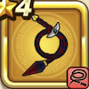

スコーピオンテイル
攻略班 5.5点 / スパークショットドルマイオラ
くわしい特徴
【レベル別習得スキル】 Lv1スパークショット（消費MP：5）敵1体に威力120%のイオ属性体技ダメージを与えたまに幻でつつみこむ Lv8ドルマ（消費MP：9）闇のチカラで敵1体にドルマ属性の呪文中ダメージを与える Lv20イオラ（消費MP：18）大きな爆発で敵全体にイオ属性の呪文中ダメージを与える Lv28虫系へのダメージ+10% Lv36攻撃時+2%の確率で毒を与える Lv40攻撃力+8 【限界突破スキル】 1凸じゅもんダメージ+5% 2凸じゅもんダメージ+5% 3凸じゅもんダメージ+5% 4凸じゅもんダメージ+5%